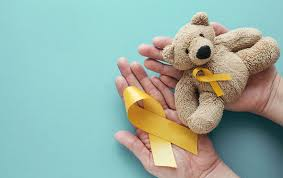

Votre enfant est atteint d’un cancer

Avoir un enfant atteint de cancer est l’un des plus grands défis qu’une famille peut affronter. Vous pourriez éprouver toutes sortes d’émotions et vous sentir dépassé. Mais avec le soutien de l’équipe de soins, de vos proches et d’autres parents, vous trouverez des façons de faire face à la situation et de veiller aux soins de votre enfant.
Diagnostic récent
Parlez franchement de son cancer avec votre enfant et expliquez-lui ce qui va se passer dans des termes qu’il comprendra. Si vous faites preuve de franchise, votre enfant aura confiance en vous et en l’équipe de soins, et sera plus enclin à partager ses émotions. En tant que parent, vous êtes un membre important de l’équipe de soins de votre enfant; c’est vous qui le connaissez le mieux. Vous pouvez aider l’équipe de soins à connaître votre enfant; vous pouvez aussi amener votre enfant à se sentir à l’aise avec l’équipe de soins et à collaborer au traitement.
Parler à votre enfant de son cancer
Certains parents pensent qu'ils peuvent protéger leur enfant en ne lui disant rien du tout sur le cancer. Mais les enfants s’aperçoivent habituellement que quelque chose ne va pas. Les experts s'entendent pour dire que même les enfants de 3 à 4 ans devraient savoir la vérité selon leur niveau de compréhension.
Pourquoi il est important d’être franc
Il est tout naturel de vouloir protéger ses enfants de quelque chose qui fait peur en ne leur parlant pas du cancer. Mais les enfants sont en mesure de déceler que quelque chose ne va pas vu le comportement de tout le monde. Il est préférable de parler de ce qui ne va pas de manière à ce qu’ils comprennent. Il y a de nombreuses bonnes raisons d’être franc. Être franc aide votre enfant à développer un sentiment de confiance envers vous et l’équipe de soins. Les enfants ont plus peur quand ils ne savent pas ce qui leur arrive ou pourquoi cela leur arrive. Être franc permet à votre enfant d’avoir la bonne information sur le cancer et son traitement. Si vous ne lui dites pas la vérité, il se servira de son imagination pour tenter de comprendre ce qui se passe. Certains enfants craindront que la situation soit plus grave qu’elle ne l’est en réalité. Si vous dites à votre enfant pourquoi il reçoit des traitements (médicaments ou ponction lombaire par exemple), il pourrait être plus disposé à collaborer même quand les traitements sont incommodants. Être renseigné sur sa maladie et son traitement peut aider votre enfant à se sentir plus en contrôle alors qu’il sent qu’il ne peut plus rien maîtriser. Quand il sait ce qui va se passer, il peut trouver des façons de faire face au traitement. Si vous prétendez que tout va bien, votre enfant pourrait penser qu’il ne doit pas parler de ses propres inquiétudes. Il pourrait ne pas vous dire comment il se sent ou ce dont il a besoin.
Comment votre enfant peut réagir
L’enfant réagit généralement au diagnostic de cancer en exprimant les mêmes types d'émotions que ses parents. La façon dont votre enfant réagira dépend aussi de son âge et de son degré de compréhension de l'information qu'on lui transmet. L’enfant peut également être affecté par la réaction des autres. Le choc est une réaction possible. L’enfant qui ne se sentait pas malade avant le diagnostic peut avoir beaucoup de difficulté à le croire et pourrait penser que ce n’est pas possible. Votre enfant peut se demander pourquoi cela lui arrive. Le déni d'un enfant est parfois si grand qu'il se retire physiquement et psychologiquement de la discussion en sortant de la pièce ou en refusant de parler. La peur, l’inquiétude et l’anxiété sont fréquentes. On peut comprendre que l’enfant craint avant tout de mourir du cancer. Il craint également les nombreux tests et traitements qu'il aura à subir. Même l'idée d'entrer dans un hôpital peut lui faire peur. Certains enfants se demandent comment ils feront face au traitement, ce qui les rend anxieux. D'autres se préoccupent des conséquences de leur diagnostic sur la famille. Cette anxiété s'intensifie parfois si l’enfant pense qu'il doit se montrer brave et cacher ses émotions afin que ses parents et ses frères et sœurs ne s'inquiètent pas. La colère est une autre réaction normale que l’enfant peut ressentir après avoir reçu un diagnostic de cancer. Il est fâché que cela lui soit arrivé. Il est furieux parce qu'on doit le piquer et le palper, parce qu'il doit avaler des pilules ou des médicaments qui goûtent mauvais ou encore rester immobile dans un appareil d'imagerie ou de radiographie. Il n'aime pas qu'on s'immisce dans son intimité et devoir rester à l'hôpital alors qu'il aimerait mieux être avec ses amis. La culpabilité est également une émotion courante. L’enfant pense souvent qu'il est atteint du cancer parce qu’il a fait, dit ou pensé quelque chose de mal ou parce qu’il n’a pas fait quelque chose, même une simple tâche comme nettoyer sa chambre. Il peut aussi se sentir coupable parce qu'il se croit responsable de cette crise familiale. Il se sent mal de chambarder la routine familiale et d'éloigner ses parents des autres enfants à la maison. Et comme les enfants sont très conscients des émotions de leurs parents, il se sent coupable de leur causer autant d'inquiétude et de peur. La tristesse et la dépression apparaissent habituellement une fois que la réalité du diagnostic s'est installée. L’enfant se sent triste lorsqu'il réalise que la vie change énormément et qu’il pourrait ne plus être en mesure de faire certaines des activités auxquelles il était habitué ou certaines activités qu’il avait planifiées. Penser aux mois de traitement à venir et aux changements qui affecteront son apparence et ce qu’il ressent face à lui-même peuvent engendrer de courtes périodes de dépression, et parfois une dépression qui dure plus longtemps.
Aider votre enfant à exprimer ses émotions
L’enfant découvre comment exprimer ses émotions en observant les autres. S'il voit ses parents exprimer très fortement leurs propres peurs et inquiétudes, cela intensifiera probablement ses peurs et préoccupations. Mais si ses parents n'expriment aucune émotion et ne parlent pas du cancer, il risque de penser qu'il ne peut pas en parler ou qu’il doit cacher ses émotions afin de protéger ses parents. Il se peut alors qu'il ne soit pas assez à l'aise pour se confier à ses parents et que ses parents ne soient pas en mesure de lui offrir le soutien dont il a tant besoin durant cette épreuve. Essayez de trouver l’équilibre entre exprimer trop d’émotions devant votre enfant et ne pas en exprimer du tout. Être ouvert et honnête avec vous-même face à vos émotions et être ouvert et franc avec votre enfant l’aidera à vous faire confiance – et s’il vous fait confiance, il devrait se sentir suffisamment en sécurité pour manifester ses émotions. Cela lui permet également de réaliser qu’il n’est pas le seul à éprouver ces sentiments. Aidez votre enfant à parler de ses émotions et à les reconnaître. Apprenez-lui que les sentiments, même s’ils sont très intenses, peuvent apparaître puis disparaître et qu’ils ne durent pas toujours. Aidez-les à faire la différence entre éprouver des émotions et les extérioriser en faisant du mal aux autres ou à lui-même. Montrez-lui différentes façons d’évacuer et d’exprimer des émotions fortes par l’activité physique comme la course ou d’autres sports ou encore par l’art, la musique ou les conversations